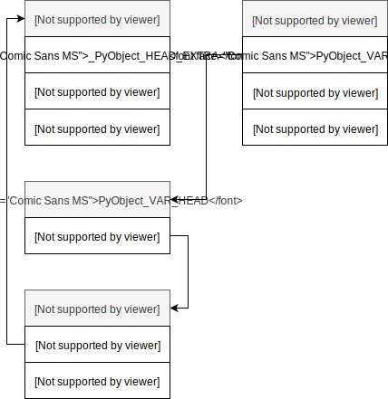
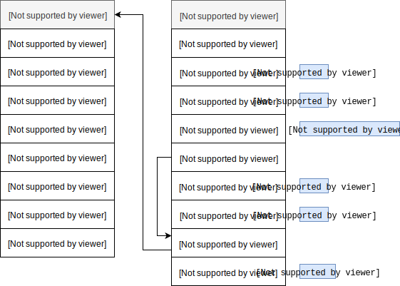

Изменяемые типы данных
В этой мы продолжим знакомство с основными типами данных в Python и поговорим об изменяемых типах.
Списки¶
>>> scores = [] >>> scores []
>>> scores = [90.4, 83, 85, 72.3, 65, 84.5, 76, 80, 64.9, 61] >>> scores [90.4, 83, 85, 72.3, 65, 84.5, 76, 80, 64.9, 61]
>>> scores[0] 90.4
>>> len(scores) 10
>>> mean_score = sum(scores) / len(scores) >>> mean_score
>>> scores.append(90) >>> scores [90.4, 83, 85, 72.3, 65, 84.5, 76, 80, 64.9, 61, 90]
>>> scores.extend([58, 91.5, 79]) >>> scores [90.4, 83, 85, 72.3, 65, 84.5, 76, 80, 64.9, 61, 90, 58, 91.5, 79]
>>> scores_copy = scores.copy() # == scores[:] == list(scores) >>> scores_copy [90.4, 83, 85, 72.3, 65, 84.5, 76, 80, 64.9, 61, 90, 58, 91.5, 79]
>>> sorted(scores, reverse=True)
Списки как динамические массивы¶
Списки в Python являются обычными динамическими массивами (вектор в C++) и обладают всеми их свойствами с точки зрения производительности: в частности, обращение к элементу по его индексу имеет сложность O(1), а поиск элемента имеет сложность O(N).
Списки в CPython определены с помощью следующей структуры:
typedef struct { PyObject_VAR_HEAD /* Vector of pointers to list elements. list[0] is ob_item[0], etc. */ PyObject **ob_item; /* ob_item contains space for 'allocated' elements. The number * currently in use is ob_size. * Invariants: * 0 <= ob_size <= allocated * len(list) == ob_size * ob_item == NULL implies ob_size == allocated == 0 * list.sort() temporarily sets allocated to -1 to detect mutations. * * Items must normally not be NULL, except during construction when * the list is not yet visible outside the function that builds it. */ Py_ssize_t allocated; } PyListObject;
Где:
ob_item- массив указателей наPyObject;allocated- емкость массива (размер буффера), то есть сколько элементов можно поместить в массивob_itemдо его увеличения, в то время какob_size- текущее количество элементов в массиве.

Если мы добавляем новый элемент в массив и при этом размер массива совпадает с размером буффера, то есть, ob_size == allocated, то происходит увеличение размера буффера путем перераспределения памяти по следующему правилу:
/* This over-allocates proportional to the list size, making room * for additional growth. The over-allocation is mild, but is * enough to give linear-time amortized behavior over a long * sequence of appends() in the presence of a poorly-performing * system realloc(). * The growth pattern is: 0, 4, 8, 16, 25, 35, 46, 58, 72, 88, ... * Note: new_allocated won't overflow because the largest possible value * is PY_SSIZE_T_MAX * (9 / 8) + 6 which always fits in a size_t. */ new_allocated = (size_t)newsize + (newsize >> 3) + (newsize < 9 ? 3 : 6);
Давайте посмотрим на процесс перераспределения памяти в действии с помощью модуля ctypes:
class ListStruct(ctypes.Structure): _fields_ = [("ob_refcnt", ctypes.c_ssize_t), ("ob_type", ctypes.c_void_p), ("ob_size", ctypes.c_ssize_t), ("ob_item", ctypes.c_long), # PyObject** pointer cast to long ("allocated", ctypes.c_ssize_t)] def __repr__(self): return f"ListStruct(ob_size={self.ob_size}, allocated={self.allocated})"
Создадим пустой список:
>>> L = [] >>> ls = ListStruct.from_address(id(L)) >>> ls ListStruct(ob_size=0, allocated=0)

Пустой список имеет размер ноль и емкость ноль. Добавим один элемент:
>>> L.append(1) >>> ls ListStruct(ob_size=1, allocated=4)

Как мы видим и размер и емкость списка изменились в соответствии с правилом роста. Добавим еще несколько элементов в список:
>>> L.extend([2,3,4]) >>> ls ListStruct(ob_size=4, allocated=4) >>> L.append(5) >>> ls ListStruct(ob_size=5, allocated=8)

Итак, давайте отметим основные различия между кортежами и списками:
- с точки зрения внутреннего представления кортежи являются статическими массивами, а списки динамическими;
- кортежи занимают меньше места в памяти, так как имеют фиксированную длину;
- кортежи неизменяемые (immutable) и могут быть выступать в качестве ключей словарей или элементов множеств;
- кортежи обычно представляют абстрактные объекты, обладающие некоторой структурой (см.
namedtupleмодуляcollectionsилиNamedTupleиз модуляtyping).
Словари¶
Словари являются одной из самых важных и сложных структур в Python и мы с ними будем постоянно встречаться. Словари представляют собой множество упорядоченных пар вида «ключ:значение».
Иногда словари называют ассоциативными массивами, иногда отображениями (имеется ввиду отображение множества ключей словаря в множество его значений).
Как и списки, словари имеют переменную длину, произвольную вложенность и могут хранить значения произвольных типов.
Создадим словарь с данными о населении ряда стран (ключами в таком словаре будут страны, а значениями - размер населения):
>>> population_by_countries = { 'India': 1326801576, 'Brazil': 209567920, 'China': 1382323332, 'Nigeria': 186987563, 'Bangladesh': 162910864, 'U.S.': 324118787, 'Russia': 143439832, 'Pakistan': 192826502, 'Mexico': 128632004 }
Иногда у нас есть отдельно списки ключей и значений, из которых мы хотим создать словарь:
>>> countries = ['India', 'Brazil', 'China', 'Nigeria', 'Bangladesh', 'U.S.', 'Russia', 'Pakistan', 'Mexico'] >>> populations = [1326801576, 209567920, 1382323332, 186987563, 162910864, 324118787, 143439832, 192826502, 128632004] >>> dict(zip(countries, populations)) {'Bangladesh': 162910864, 'Brazil': 209567920, 'China': 1382323332, 'India': 1326801576, 'Mexico': 128632004, 'Nigeria': 186987563, 'Pakistan': 192826502, 'Russia': 143439832, 'U.S.': 324118787}
Обращение к элементам словаря похоже на обращение к элементам последовательностей, только вместо индекса используется ключ:
>>> population_by_countries['Russia'] 143439832 >>> population_by_countries['Russia'] = 143439832 + 1 >>> population_by_countries['Russia'] 143439833
Добавим новую пару:
>>> population_by_countries['Japan'] = 126323715 >>> population_by_countries {'Bangladesh': 162910864, 'Brazil': 209567920, 'China': 1382323332, 'India': 1326801576, 'Japan': 126323715, 'Mexico': 128632004, 'Nigeria': 186987563, 'Pakistan': 192826502, 'Russia': 143439833, 'U.S.': 324118787}
При попытке извлечь значение с несуществующим ключом, генерируется
исключение KeyError:
>>> population_by_countries['Poland'] ... KeyError: 'Poland'
С помощью оператора in можно проверить существует ли ключ в словаре. Оператор in работает со всеми контейнерами (строки, списки, кортежи, словари, множества), но для последовательностей (строки, списки, кортежи) эта операция является медленной:
>>> "Russia" in population_by_countries True >>> "Poland" in population_by_countries False
Можно воспользоваться методом get, опционально указав значение, которое будет возвращено, если ключ не был найден:
>>> population_by_countries.get('Poland') # None >>> population_by_countries.get('Poland', 'NA') 'NA'
Иногда нужно получить отдельно «список» ключей, значенией или кортежей (ключ, значение):
>>> population_by_countries.keys() dict_keys(['India', ..., 'Japan']) >>> population_by_countries.values() dict_values([1326801576, ..., 126323715]) >>> population_by_countries.items() dict_items([('India', 1326801576), ..., ('Japan', 126323715)])
Вы не можете упорядочить словарь по ключам или значениям, но можете получить список кортежей и упорядочить его:
>>> from operator import itemgetter >>> sorted(population_by_countries.items(), key=itemgetter(1), reverse=True) [('China', 1382323332), ('India', 1326801576), ('U.S.', 324118787), ('Brazil', 209567920), ('Pakistan', 192826502), ('Nigeria', 186987563), ('Bangladesh', 162910864), ('Russia', 143439833), ('Mexico', 128632004), ('Japan', 126323715)]
Зачастую словари используются для представления куда более сложных структур, например:
>>> import requests >>> response = requests.get('https://api.openweathermap.org/data/2.5/weather?q=Saint Petersburg&units=metric&APPID=a46b3bb83f9e16e2ee203e9ecfca99f8') >>> response.json() {'base': 'stations', 'clouds': {'all': 75}, 'cod': 200, 'coord': {'lat': 59.94, 'lon': 30.32}, 'dt': 1519380000, 'id': 498817, 'main': {'humidity': 85, 'pressure': 1027, 'temp': -11, 'temp_max': -11, 'temp_min': -11}, 'name': 'Saint Petersburg', 'sys': {'country': 'RU', 'id': 7267, 'message': 0.0041, 'sunrise': 1519362815, 'sunset': 1519398694, 'type': 1}, 'visibility': 9000, 'weather': [{'description': 'light snow', 'icon': '13d', 'id': 600, 'main': 'Snow'}], 'wind': {'deg': 280, 'speed': 3}}
Хеширование¶
Мы не будем рассматривать внутреннее представление словарей, так как они устроены значительно сложнее чем объекты, которые мы рассматривали ранее. Для интересующихся можно посмотреть выступления Raymond Hettinger и Brandon Rhodes о работе словарей, или почитать исчерпывающую презентацию Дмитрия Алимова об эволюции словарей, начиная с Python 2.x.
Тем не менее следует знать, что ключами словарей могут быть только хешируемые объекты (читай неизменяемые), то есть те объекты, для которых определена хеш-функция (обычно это числа, строки и кортежи).
Хеш-функция это такая функция, которая задает правило отображания объектов в целые числа. Существует множество видов хеш-функций и они должны обладать рядом свойств, например, «если два объекта равны, то их хеши должны быть одинаковыми» или «если объекты имеют одинаковый хеш, то вероятно это один и тот же объект». Для наглядности мы рассмотрим простой пример. Зададим хеш-функцию для строк, которая вычисляет хеш как сумму произведений позиции символа на его кодовый знак, и будем использовать эту функцию для определения индекса в списке куда следует поместить строку:
Замечание
Чтобы не выполнять все промежуточные шаги, вы можете выделить строки 5,9,10,12,13,15,16,18,19 (они станут отмечены красным цветом).
Фактически мы получили очень наивную реализацию хеш-таблицы (словаря). Вы могли заметить, что для последней строки «повторяюсь» мы получили такой же хеш как и для строки «не» - это называется коллизией.
Множества¶
Последний измненяемый тип, который мы рассмотрим, это множества. Множества представлены структурой PySetObject, а элементами множества являются записи, представленные структурой setentry:
typedef struct { PyObject *key; Py_hash_t hash; /* Cached hash code of the key */ } setentry; typedef struct { PyObject_HEAD Py_ssize_t fill; /* Number active and dummy entries*/ Py_ssize_t used; /* Number active entries */ Py_ssize_t mask; setentry *table; Py_hash_t hash; /* Only used by frozenset objects */ Py_ssize_t finger; /* Search finger for pop() */ setentry smalltable[PySet_MINSIZE]; PyObject *weakreflist; /* List of weak references */ } PySetObject;

>>> s = set()

>>> s.add(1) >>> s.add(5)
// ... i = (size_t)hash & mask; entry = &so->table[i]; if (entry->key == NULL) goto found_unused; // ... found_unused: so->fill++; so->used++; entry->key = key; entry->hash = hash; if ((size_t)so->fill*5 < mask*3) return 0; return set_table_resize(so, so->used>50000 ? so->used*2 : so->used*4); // ...

Давайте попробуем добавить еще пару элементов:
>>> s.add(9) >>> s.add(13)
В обоих случаях возникнет коллизия, так как hash(9) & 7 == 1 и hash(13) & 7 == 5, а соответствующие позиции уже заняты. В CPython используется линейное пробирование вместо цепочек для разрешения коллизий.

И наконец, если мы добавим еще один элемент:
>>> s.add(0)
if ((size_t)so->fill*5 < mask*3) return 0; return set_table_resize(so, so->used>50000 ? so->used*2 : so->used*4);

Мы вкратце рассмотрели основные типы данных и внутреннее представление некоторых из них. Вы не должны стараться запомнить или понять все что было описано в этой лекции с первого раза. Время от времени возвращайтесь к тем разделам, которые вам позакались непонятными.